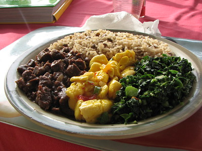

HOME
Caribbean Ital

Description
A delicious plate of West Indian Ital.
Picture attributable to : "IMG_4007" by xuhulk is licensed under CC BY 2.0.
Ingredients
- One and half (1-1/2) cup of red kidney beans
- Ten (10) garlic cloves
- 14 cups of water
- One half (1/2) chopped red onions
- One (1) scotch bonnet or habanero pepper
- One (1) grace pumpkin soup packet
- One (1) pound of diced kabocha squash
- Two (2) chopped scallion onions
- Couple sprigs of thyme
- Three (3) red potatoes cut in cubes
- Small handful of parsley
- One half (1/2) sliced chayote
- One (1) cut carrot
- One quarter (1/4) chopped red pepper
- One quarter (1/4) chopped green pepper
- One quarter (1/4) cup of coconut milk
- One quarter (1/4) cup of olive oil
- One (1) handful of spinach
- One (1) teaspoon of curry powder
- One (1) teaspoon of onion powder
- One (1) teaspoon of garlic powder
- One (1) teaspoon of all purpose seasoning
Steps
- Add kidney beans, water and garlic to large stock pot
- Bring to boil and cook medium heat for one hour fifteen minutes
- Separate water and kidney beans, keeping both water and kidney beans
- Clean pot
- Place pot on medium heat, saute red onions, garlic, bell peppers with
olive oil for two (2) minutes
- Add squash, potato, chayote, carrots and continue to saute for additional
one (1) minute
- From the set aside water, add two (2) cups and an additional five (5)
cups of plain water.
- Add the kidney beans previously set aside
- Add coconut milk, grace pumpkin soup, scallion, thyme, pepper, parsley,
onion, garlic powder, and all purpose seasoning
- Cover pot and simmer low to medium heat